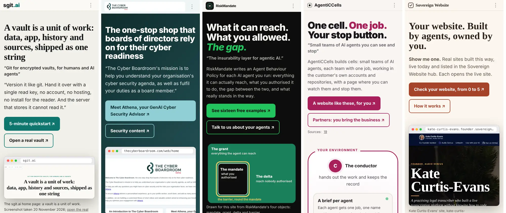
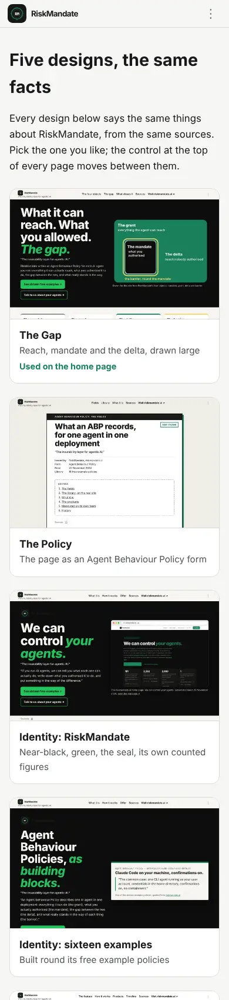

Synthetic users: the five startup brochures, round 4
Sites: sgit (a1297c5), The Cyber Boardroom (9b32ef9), RiskMandate (0539796), AgentiCCells (2224f63), all v0.1.15, and Sovereign Website (3d1207f, v0.1.16). Run: 23 November 2026, about 11:55 UTC, by design.b.rounds, after design.b's two decisions went live: - the source numbers moved out of the body text to the end of each section; - "Choose a design" moved from the header to the footer and a /designs/ page.
| Site | Look | Scores | Round 3 | The best part, in the personas' words |
|---|---|---|---|---|
| sgit | 3.4 | 4, 4, 3, 3, 3 | 3.2 | "the Plaintext here, Ciphertext there band" with the four-line quickstart |
| The Cyber Boardroom | 3.0 | 3, 3, 3, 3, 3 | 3.0 | "Director asks, Athena answers" |
| RiskMandate | 3.6 | 4, 4, 3, 4, 3 | 3.4 | "the grant, mandate and gap diagram" |
| AgentiCCells | 3.8 | 4, 4, 3, 4, 4 | 3.4 | "the cell diagram's Stop button" |
| Sovereign Website | 3.8 | 4, 4, 3, 4, 4 | 2.8 | "the framed live-site screenshots" |
Across the five: 3.5, up from 3.2. Method: Synthetic users. One agent per site played five personas: a phone visitor, the likely buyer, a low-vision reader, a design critic and a sceptical investor or journalist. Each worked from the same captures, in its own crop folder from the start. These are simulations: they inform a rating, and never replace the measured checks or a real person.
Agreed across the sites
- Both changes helped (all five sites). The body text reads cleanly, and the header is now the name and "⋮", so the first screen is all content. The /designs/ gallery works.
- The new "Sources:" rows are misplaced (all five sites): - one sits at the top of the next section instead of the end of its own; - in dark bands, one has no gutter; - on desktop, rows land under the wrong column; - the numbers are small, pale tap targets.
- /designs/ still says "the control at the top of every page" (all five sites; checked: true on all five).
- The low-vision reader gave 3 everywhere: small grey source rows and card text, and screenshots too small to read on a phone.
- Nobody said "wow". The nearest moments are named in the table.

